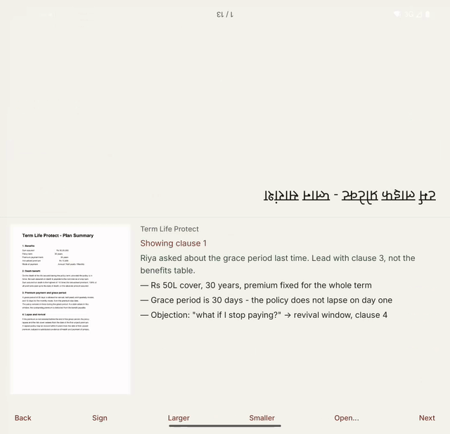

Twofold
One device. Two sides of the table.
Lay a Galaxy foldable flat between you and your client. The crease splits the screen. Their half faces them, right-side-up. Your half faces you.
They see the document — clean, large, nothing else. You see the same document plus your private notes, your talk track, and the controls. You never hand over your phone. They never see your notes.

Why it needs a foldable
Not “works better on” — cannot exist otherwise. A conventional phone has one screen facing one direction. To show a document to the person opposite you either turn the phone around and read upside-down, hand it over and lose control of it, or carry a laptop that doesn't fit on the table.
How it decides
Posture drives the app, not the layout. Folded or held, it's a private editor. Open and lying flat, it's a two-sided device. Nobody presses “present” — they put the phone down.
A detail most foldable apps miss: FLAT is reported both when a device lies on a
table and when it's fully open in someone's hands. Twofold also checks gravity before
it splits the screen, so your private notes never rotate toward whoever is standing behind
you.